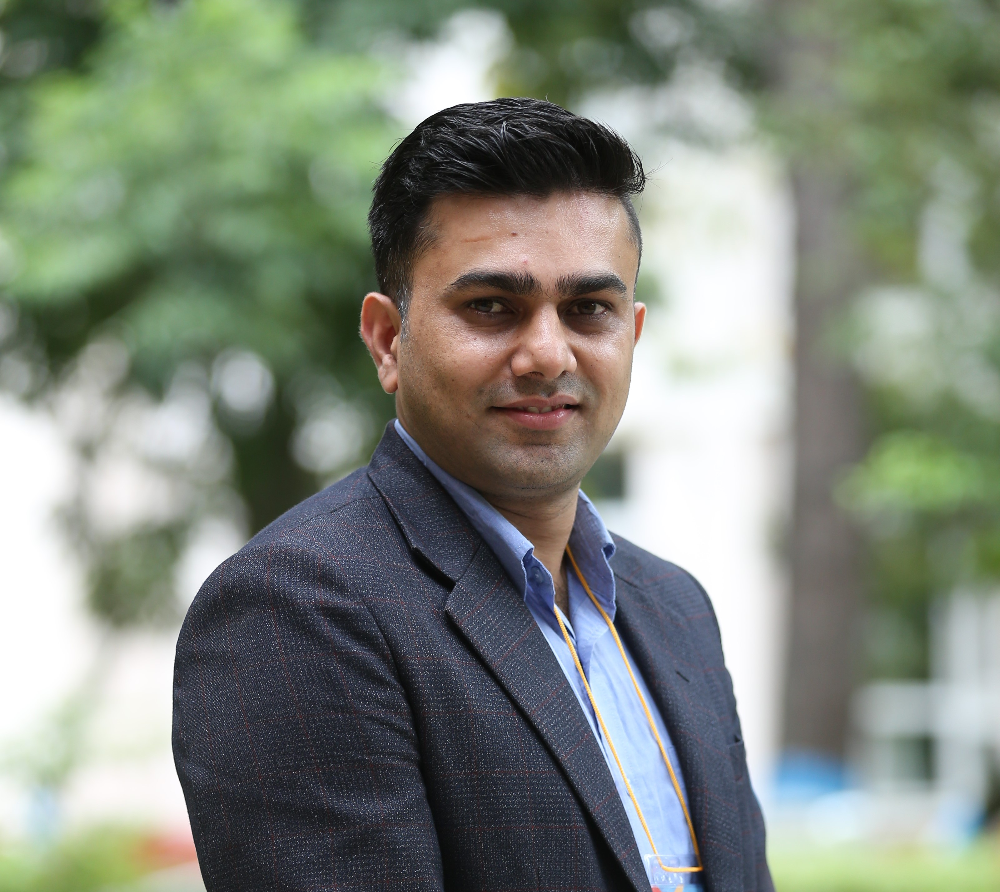

Contact
Deakin University, Melbourne Burwood Campus
EA Building, Burwood, Victoria 3125, Australia
b.chalise@deakin.edu.au
Twitter: @bishalkchalise
EA Building, Burwood, Victoria 3125, Australia
b.chalise@deakin.edu.au
Twitter: @bishalkchalise
Bishal K Chalise
PhD Candidate · Department of Economics, Deakin University
Hello! I am a fourth-year PhD candidate at Department of Economics, Deakin University (Melbourne, Australia). My research examines how institutional structures and political incentives shape developmental outcomes, using large-scale administrative, spatial, and open-source data with quasi-experimental designs.
Research Interests
Primary: Political Economy, Development Economics
Secondary: Public Finance, Disasters, Environment, Migration, Health
Secondary: Public Finance, Disasters, Environment, Migration, Health
I am visiting Yale University in Spring 2026.
Curriculum Vitae